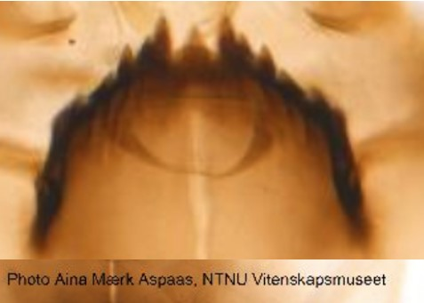
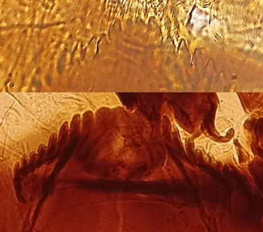

Accueil
Glossaire
Classification
Bibliographie
A propos
Rechercher
Sous famille des Diamesinae
Mentum avec de nombreuses dents. Pas de tubercules sur la face dorsale de la capsule céphalique


Dent médiane triangulaire, séparée de la 1ère paire latérale par une profonde encoche en « V »
Dent médiane (ou partie médiane du mentum) arrondie, tronquée ou bilobée, étroitement séparée de la 1ère paire de dents latérales.